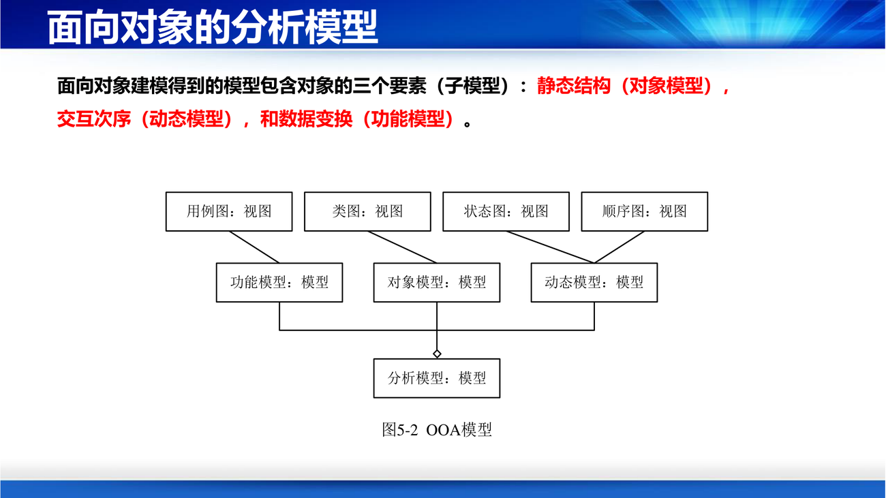

课件第 52 页的一句话定义：
面向对象分析，就是抽取和整理用户需求，并建立问题域精确模型的过程。
信息来源有三条：需求陈述、应用领域的专业知识、关于客观世界的常识。
补第三条"常识"常被忽略，但它最救命。举个浅例：给图书馆系统建模，需求陈述里没写"一本书可以被借多次"，但常识告诉你"同一本书会被不同人先后借走"——于是你会建出"借阅记录"这个类。只读需求文档的人建不出这个类，因为他不知道业务是怎么发生的。 这就是第 4 讲"现场观摩"为什么重要。
课件第 53 页的核心图是这一讲的结构骨架：
分析模型
┌───────────┼───────────┐
对象模型 动态模型 功能模型
（静态结构） （交互次序） （数据变换）
│ │ │
类图 状态图 数据流图
顺序图
三个模型的分工（PPT 第 55 页），这张表必须记牢：
| 模型 | 描述什么 | 一句话 |
|---|---|---|
| 对象模型 | 静态结构 | 定义了做事情的实体——静态数据结构 |
| 动态模型 | 交互次序 | 规定什么时候做——执行操作 |
| 功能模型 | 数据变换 | 系统应该做什么——数值变化 |

课件特别强调：
在任何情况下，对象模型始终都是最重要、最基础、最核心的，它描述了现实世界中的"类—&—对象"以及它们之间的关系，表示目标系统的静态数据结构。
补为什么对象模型最核心？ 因为另外两个模型都挂在它上面：状态图描述的是"某个类对象的状态变化"，数据流图里的每个处理框都要"对应到一个对象上的操作"。没有类，状态图和 DFD 都无处安放。 这也解释了第 5 讲的实战顺序：先建概念模型，再建用例模型，再鲁棒分析，最后交互建模。
课件第 56 页给出一个很有教学价值的分解：大型系统的对象模型由五个层次组成：
| 层次 | 英文 | 内容 |
|---|---|---|
| 主题层 | subject layer | 把大模型分解成若干概念范畴（主题） |
| 结构层 | struct layer | 类之间的关系（分类结构、组装结构） |
| 类—&—对象层 | class & object layer | 类边界、实例边界 |
| 属性层 | attribute layer | 属性、实例连接 |
| 服务层 | service layer | 服务、消息 |
课件还把这五个层次和软件系统的四个部分对应起来：
问题论域部分 人机交互部分
任务管理部分 数据管理部分
补为什么要有"主题层"？ 课件给了心理学依据：Miller 的 7±2 原则（人的短期记忆一次只能装 5–9 个对象）。一个 ATM 系统有十几个类，还能一眼看完；一个银行核心系统有几百个类，必须划分成"总行""分行""ATM"这样的主题，否则没人能读懂。主题层不是为了机器，是为了人的注意力。
补这条原则和第 6 讲"模块化的分解数量"是同一件事的两面：分解让人能理解，但分解过头会增加接口成本——所以主题的数量要控制在"一眼能看完"的量级。
课件第 57 页给了一条完整的活动链，这是第 5 讲实战（ATM）的剧本：
建立用况图 → 发现对象 → 定义属性与服务 → 建立结构与连接
→ 建立交互图/状态图/活动图 → 原型开发 → 详细说明 → 建立类图
对应的五个主要活动（PPT 第 57 页下半部分）：
补注意最后一条"反复修改"不是客气话，而是方法的一部分。 课件在后面 ATM 案例里专门用一节讲"反复修改"（把"现金兑换卡"拆成两个类、把"分行"和"分行计算机"合并）——第一版的模型一定是错的，建模的过程就是发现第一版错在哪的过程。
补面向对象分析的产物是"问题域的精确模型"，不是"软件的架构"。 这一点在考试里经常设陷阱：问"分析阶段应该画什么图"，答案是用例图、概念类图（领域类图）、顺序图、状态图、活动图——不包括构件图、部署图、包图这些偏实现的图。判断标准很简单：如果这张图上出现了"数据库""服务器""接口协议"这类词，它就不是分析阶段的产物。